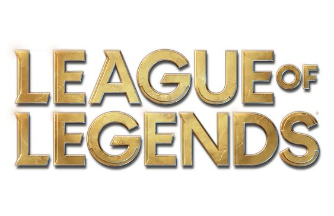

Yasuo, un intrépido jonio con una fuerza de voluntad inquebrantable, es también un hábil espadachín capaz de controlar el viento y utilizarlo contra sus enemigos. Siendo un joven orgulloso fue injustamente acusado de asesinar a su maestro. Incapaz de demostrar su inocencia, se vio obligado a acabar con la vida de su propio hermano en defensa propia. Incluso después de que el verdadero asesino de su maestro saliera a la luz, Yasuo no ha podido perdonarse a sí mismo por todo lo que ha hecho y ahora deambula por su tierra natal con el viento como único guía de su espada.

Tras abandonar la orden de los Kinkou y su título de Puño de la Sombra, Akali actúa ahora en solitario y está lista para convertirse en el arma mortal que necesita su gente. Aunque no renuncia a las enseñanzas de Shen, su maestro, ha jurado defender Jonia de sus enemigos, asesinándolos uno a uno. Los ataques de Akali son silenciosos, pero su mensaje se escucha con toda claridad: temed a la asesina sin maestro.
Jhin es un meticuloso criminal psicópata que ve el asesinato como arte. Otrora prisionero jonio, fue liberado gracias a los sombríos tejemanejes del consejo de Jonia. Ahora, el asesino en serie trabaja como sicario de la secta. Con su pistola como pincel, la obra de Jhin muestra un arte brutal, tanto para las víctimas como para los espectadores. Encuentra un cruel placer en la escenificación atroz, lo cual lo convierte en un candidato sin igual para mandar el más poderoso de los mensajes: el terror.
Yuumi, una gata mágica de Ciudad de Bandle, fue antaño la compañera de una hechicera yordle, Norra. Tras la misteriosa desaparición de su maestra, Yuumi se convirtió en la guardiana del Libro de umbrales de Norra, un objeto sintiente cuyas páginas contienen portales por los que la gata va en su búsqueda. Falta de cariño, Yuumi se busca amigos con los que compartir su aventura y los protege con escudos luminosos y una determinación inquebrantable. Pese a los intentos de Libro de mantenerla concentrada, Yuumi suele distraerse con las comodidades mundanas, como las siestas y el pescado. Sin embargo, al final siempre retoma la misión de encontrar a su maestra.
Sylas de Dregbourne, originario de uno de los barrios más pobres de Demacia, llega como símbolo del lado más oscuro de la gran ciudad. De niño, su potencial para hallar la brujería oculta llamó la atención de los cazadores de magos más prestigiosos, quienes terminaron encarcelándolo por emplear esos mismos poderes contra ellos. Ahora que es libre, Sylas lleva una vida propia de un revolucionario curtido: utiliza la magia de los que están a su alrededor para destruir el reino al que una vez sirvió… y su pandilla de magos proscritos parece que crece cada día más.
Ornn es el espíritu de Freljord de la forja y la artesanía. Trabaja en la soledad de una enorme forja esculpida en las cavernas de lava bajo el volcán de Dulcehogar. En ella modela objetos de calidad sin igual y depura menas en burbujeantes calderos de roca fundida. Cuando otras deidades (sobre todo Volibear) merodean por la tierra y se entrometen en asuntos de mortales, Ornn se ofrece para poner a estos seres impetuosos en su sitio, ya sea con su fiel martillo o con la furia de las mismísimas montañas.